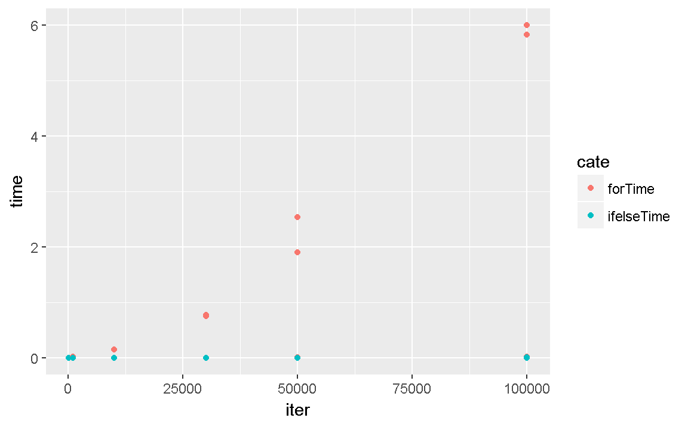

3 단순 반복 업무를 위한 for문과 apply류 맛보기
3.1 조건문
3.1.1 if
if는 if (조건) {조건이 true 이면 실행할 부분}으로 구성됩니다.
if(TRUE){print(1)}
#> [1] 1
print(2)
#> [1] 2조건은 결과가 하나의 logical 값으로 나와야 하고 여러 개의 logical 값이면 맨 앞의 값만 사용한다는 warning을 같이 출력합니다.
if(c(T,F,F,F)){print(1)}
#> Warning in if (c(T, F, F, F)) {: length > 1 이라는 조건이 있고, 첫번째 요소
#> 만이 사용될 것입니다
#> [1] 1
print(2)
#> [1] 2보통은 아래와 같은 형식으로 사용합니다.
x<-1
if ( x > 0 ){
print(1)
}
이제까지 조건이라고 말하는 것이 있었는데, 조건이란 TRUE, FALSE로 결과가 나오는 표현 전부를 뜻합니다. 제가 if문에서 나올 만한 예시를 준비했습니다.
x<-c()
if(identical(x,c())){print("x has no data.")}
#> [1] "x has no data."
print("if part done.")
#> [1] "if part done."
options(stringsAsFactors = F)
y<-c(1,2,3)
z<-c(1,2,3)
if(length(y)==length(z)){
tem<-data.frame(y,z)
print(tem)
}
#> y z
#> 1 1 1
#> 2 2 2
#> 3 3 3
print("if part done.")
#> [1] "if part done."identical은 두 개의 변수를 비교해주고 같으면 TRUE, 다르면 FALSE를 결과로 주는 함수입니다. 결과를 logical로 주는 덕분에 조건문에 사용하기 딱 좋은 함수 입니다. 예를 들어 데이터에 무언가 문제가 생겨서 함수에 들어가지 못하거나 할때 우회하는 조건을 작성하는데 좋습니다. 저같은 경우는 N2H4 패키지를 작성할 때 getContent에서 사용했습니다. 물론 이상적으로는 정규식과 네이버 뉴스의 root url을 바탕으로 비교하는 식으로 해야 더 정교하겠습니다만, getUrlListByCategory 함수에서 생성되는 link를 사용하는 형태도 구성되어 있어서 아래와 같이 작성하였습니다.
...
if(!identical(url,character(0))){
if (RCurl::url.exists(url)&
"error_msg 404"!=(read_html(url)%>%html_nodes("div#main_content div div")%>%html_attr("class"))[1]
) {
...3.1.2 else
영어 표현을 보면 생각하기 쉬우시겠지만 if(조건){조건이 true 이면 실행할 부분} 이후에 사용해서 조건이 false면 실행할 부분을 작성하는데 사용합니다. if (조건) {조건이 true 이면 실행할 부분} else {조건이 false 면 실행할 부분}으로 구성됩니다.
if(TRUE){
print(1)
} else {
print(3)
}
#> [1] 1
print(2)
#> [1] 2else는 앞에 if가 조건을 작성했기 때문에 추가적인 조건을 작성하지는 않습니다. 여러 if 조건을 사용하고 그 이후에 else를 사용할 수도 있습니다.
x<-1
if(x<0){
print(1)
}
if(x>10) {
print(3)
} else {
print(2)
}
#> [1] 2
print(4)
#> [1] 4최근의 코드 작성 스타일은 누가 봐도 읽고 이해하기 쉽게 이다 보니 고려하면 좋을 것 같습니다. 특히 이 스타일은 자기 자신에게도 적용이 되어서, 나중에 봐도 기억하기 쉽게 작성하는 것이 좋습니다.
3.1.3 ifelse
ifelse는 앞에 함수와는 다른 결과를 제공해서 사용하는 곳이 다릅니다. 우선 형태는 ifelse(조건, 조건이 true일때 할 것, 조건이 false일때 할 것)으로 구성됩니다. 그래서 기존의 데이터를 새로운 기준으로 조정해서 사용할 때 많이 사용합니다.
library(readr)
#> Warning: 패키지 'readr'는 R 버전 3.4.1에서 작성되었습니다
sd<-read_csv("./data/membership.txt")
#> Parsed with column specification:
#> cols(
#> 고객번호 = col_character(),
#> 멤버십명 = col_character(),
#> 가입년월 = col_integer()
#> )
names(sd)[1]<-"고객번호"
sd<-data.frame(sd)
str(sd)
#> 'data.frame': 7456 obs. of 3 variables:
#> $ 고객번호: chr "00011" "00021" "00037" "00043" ...
#> $ 멤버십명: chr "하이마트" "하이마트" "하이마트" "하이마트" ...
#> $ 가입년월: int 201512 201506 201306 201403 201411 201312 201506 201404 201406 201311 ...
summary(sd)
#> 고객번호 멤버십명 가입년월
#> Length:7456 Length:7456 Min. :201210
#> Class :character Class :character 1st Qu.:201311
#> Mode :character Mode :character Median :201407
#> Mean :201412
#> 3rd Qu.:201504
#> Max. :201512
sd$"최근고객"<-ifelse(sd$"가입년월">mean(sd$"가입년월"),"최근","최근아님")
head(sd)
#> 고객번호 멤버십명 가입년월 최근고객
#> 1 00011 하이마트 201512 최근
#> 2 00021 하이마트 201506 최근
#> 3 00037 하이마트 201306 최근아님
#> 4 00043 하이마트 201403 최근아님
#> 5 00044 하이마트 201411 최근아님
#> 6 00061 하이마트 201312 최근아님관련해서 여기를 가보시면 for문에 대한 간략한 방법을 질문하시고, 댓글로 여러 답변이 달렸는데, ifelse가 가장 좋은 해결책으로 보입니다. 확인해보세요.
3.1.4 try
try는 error를 우회하거나 활용하기 위해서 사용하는 함수입니다. 직접 사용할 일은 많지 않지만 함수의 실행에서 에러가 났을 때 (ex> data.frame은 데이터의 길이가 다르면 변수를 만들지 못하고 에러를 출력합니다.) 에러가 난 부분만 기록하고 넘기는 형태로 코드를 작성 할 수 있습니다. 더 섬세하 기능의 tryCatch 도 있으니 ?tryCatch를 확인해주세요.
noObj
print(1)
## Error in try(noObj) : object 'noObj' not foundtry(noObj)
print(1)
#> [1] 1콘솔에서 실행하면 try(noObj)에서 에러가 발생합니다. 하지만 멈추는 것이 아니라 다음 코드를 실행하는 것이 그냥 noObj를 코드에 작성한 것과 차이점입니다. try를 입력해 보시면 silect 옵션이 있는데 TRUE로 해주면 에러 출력도 하지 않습니다.
err<-try(noObj)
err
#> [1] "Error in try(noObj) : 객체 'noObj'를 찾을 수 없습니다\n"
#> attr(,"class")
#> [1] "try-error"
#> attr(,"condition")
#> <simpleError in doTryCatch(return(expr), name, parentenv, handler): 객체 'noObj'를 찾을 수 없습니다>
class(err)
#> [1] "try-error"위와 같은 식으로 try(함수)를 변수에 선언하면 class(변수)를 통해 조건문을 활용해서 에러가 발생했을 때를 직접적으로 우회할 수 있습니다.
3.2 반복문
3.2.1 repeat
repeat은 가장 단순한 형태의 반복 구분입니다. 그냥 repeat만 사용할 수도 있습니다만, repeat(print(1))을 실행하면 무한히 1을 출력하고 멈추지 않습니다. 강제로 멈추는 활동을 해주어야만 멈추니 주의해 주세요. 그래서 break 문법이 준비되어 있습니다.
3.2.2 break
break는 말 그대로 멈추라는 명령입니다. break는 독특하게 뒤에 ()를 붙이지 않고 활용하는 함수로 조건문이나 반복문 안에 쓰여서 조건문과 반복문을 멈추는 역할을 합니다.
x<-1
repeat(
if(x>10){
break
} else {
print(x)
x<-x+1
}
)
#> [1] 1
#> [1] 2
#> [1] 3
#> [1] 4
#> [1] 5
#> [1] 6
#> [1] 7
#> [1] 8
#> [1] 9
#> [1] 103.2.3 while
사실 repeat문은 사용법이 조금 길이서 잘 사용하지 않습니다. 기능적인 대체는 while문으로 가능한데, while은 while(조건){조건이 true인 동안 할 것}으로 구성됩니다.
x<-1
while(x<10){
print(x)
x<-x+1
}
#> [1] 1
#> [1] 2
#> [1] 3
#> [1] 4
#> [1] 5
#> [1] 6
#> [1] 7
#> [1] 8
#> [1] 9위의 코드가 아까 repeat으로 만든 식과 같은 결과를 보여줍니다. 안의 조건이 달라서 이해가 어려우실 수 있어서 repeat을 다시 작성해보겠습니다.
x<-1
repeat(
if(x<10){
print(x)
x<-x+1
} else {
break
}
)
#> [1] 1
#> [1] 2
#> [1] 3
#> [1] 4
#> [1] 5
#> [1] 6
#> [1] 7
#> [1] 8
#> [1] 9자유도가 높은 repeat에 비해서 while은 괄고 안의 조건이 TRUE일 때 동안만 동작합니다. 하지만 한 방법으로만 고정되어 있어서 오히려 혼란을 막고, 코드가 읽기 좋게 작성할 수 있는 장점이 있습니다.
3.2.4 for
for는 반복하는 내용을 쉽게 다루기 위해서 준비되어 있습니다. 예를 들어서 위에서 while로 작성된 것을 for로 다시 작성해 보겠습니다.
for(x in 1:9){
print(x)
}
#> [1] 1
#> [1] 2
#> [1] 3
#> [1] 4
#> [1] 5
#> [1] 6
#> [1] 7
#> [1] 8
#> [1] 9while에 비해 훨씬 간결해 졌습니다. 이해하기도 좋구요. for(반복에 사용할 변수 in 반복에 사용할 변수에 넣을 데이터를 가지는 벡터){반복 실행할 내용 - 반복에 사용할 변수를 활용함}의 형태로 사용합니다. 말로 풀어 쓰려니 오히려 어려워 보이는 것 같네요. 몇 가지 예시를 더 들어 보겠습니다.
data<-head(sd$"고객번호")
for(cNum in data){
print(sd[sd$"고객번호"==cNum,])
}
#> 고객번호 멤버십명 가입년월 최근고객
#> 1 00011 하이마트 201512 최근
#> 고객번호 멤버십명 가입년월 최근고객
#> 2 00021 하이마트 201506 최근
#> 고객번호 멤버십명 가입년월 최근고객
#> 3 00037 하이마트 201306 최근아님
#> 고객번호 멤버십명 가입년월 최근고객
#> 4 00043 하이마트 201403 최근아님
#> 고객번호 멤버십명 가입년월 최근고객
#> 5 00044 하이마트 201411 최근아님
#> 고객번호 멤버십명 가입년월 최근고객
#> 6 00061 하이마트 201312 최근아님N2H4의 사용예시도 복잡하게 무려 5중 for문(!)으로 구성되어 있습니다. 중간에 while, try, if도 다 사용되었으니 설명해 드리겠습니다.
3.2.5 next
에러에 대해 우회하는 것에 대해서 조건문을 주는 방법을 설명드렸었습니다. next는 break와 비슷하지만 조건문이나 반복문을 멈추는 것이 아니라 다음 번으로 넘기는 역할을 합니다. 예를 들면 아래와 같습니다.
data<-head(sd$"고객번호")
for(cNum in data){
if(sd[sd$"고객번호"==cNum,"최근고객"]=="최근"){next}
print(sd[sd$"고객번호"==cNum,])
}
#> 고객번호 멤버십명 가입년월 최근고객
#> 3 00037 하이마트 201306 최근아님
#> 고객번호 멤버십명 가입년월 최근고객
#> 4 00043 하이마트 201403 최근아님
#> 고객번호 멤버십명 가입년월 최근고객
#> 5 00044 하이마트 201411 최근아님
#> 고객번호 멤버십명 가입년월 최근고객
#> 6 00061 하이마트 201312 최근아님출력된 내용을 보면 sd[sd$"고객번호"==cNum,"최근고객"]=="최근"일 때 다음 줄에 있는 print를 하지 않고 다음(next)으로 넘어간 것을 확인할 수 있습니다. 이걸 통해서 조건에 따라 그 아래 내용을 실행하지 않고 다음번 반복으로 넘기는 것이 가능합니다.
N2H4의 사용예시에는 next를 사용하지 않고 while을 사용했는데, 크롤링 특성상 요청이 일부 실패도 할 수 있기 때문에 추가적인 시도를 하기 위해서 사용했습니다. 데이터를 전부 가져오는 것이 많이 중요하지 않다면 next를 사용하는 것이 더 간편하고 빠르게 작성하는 방법이 될 것 같습니다.
지금 예시를 눈으로 보여드리기 위해 for문 안을 print로 계속 채우고 있는데, print의 위치에 수행하고자 하는 함수를 작성하시면 됩니다.
X<-as.data.frame(matrix(1:64, ncol=4, dimnames=list(seq(1:16), c("a", "b", "c", "d"))))
X$a[c(1,3,10)]<-0
for (i in 1:nrow(X)){
if (X$a[i]==0) {
X$e[i]<-(-999)
} else {
X$e[i]<-X$b[i]/X$c[i]
}
}
X
#> a b c d e
#> 1 0 17 33 49 -999.000
#> 2 2 18 34 50 0.529
#> 3 0 19 35 51 -999.000
#> 4 4 20 36 52 0.556
#> 5 5 21 37 53 0.568
#> 6 6 22 38 54 0.579
#> 7 7 23 39 55 0.590
#> 8 8 24 40 56 0.600
#> 9 9 25 41 57 0.610
#> 10 0 26 42 58 -999.000
#> 11 11 27 43 59 0.628
#> 12 12 28 44 60 0.636
#> 13 13 29 45 61 0.644
#> 14 14 30 46 62 0.652
#> 15 15 31 47 63 0.660
#> 16 16 32 48 64 0.667ifelse 함수에서 소개했던 질문쪽의 for로 작성된 코드입니다. for로 작성하는 것이 사실 생각하기 쉬운 방법이라고 생각합니다. 저는 심지어 처음에는 for로 작성하라고 권장합니다. 문제를 직접 겪고, 그 문제를 해결하는 방법을 찾으려할 때 그 방법이 더 몸에 남는 것 같습니다.
아래 apply를 하기 전에 for와 ifelse가 얼마나 다른지 한 번 비교해 보겠습니다.
library(ggplot2)
#> Warning: 패키지 'ggplot2'는 R 버전 3.4.1에서 작성되었습니다
library(dplyr)
#> Warning: 패키지 'dplyr'는 R 버전 3.4.1에서 작성되었습니다
#>
#> 다음의 패키지를 부착합니다: 'dplyr'
#> The following objects are masked from 'package:stats':
#>
#> filter, lag
#> The following objects are masked from 'package:base':
#>
#> intersect, setdiff, setequal, union
library(tidyr)
#> Warning: 패키지 'tidyr'는 R 버전 3.4.1에서 작성되었습니다
times<-c(100,1000,10000,30000,50000,100000)
tData<-c()
for(tm in times){
X<-as.data.frame(matrix(1:tm, ncol=4, dimnames=list(seq(1:(tm/4)), c("a", "b", "c", "d"))))
X$a[c(1,3,10)]<-0
forTime<-system.time(
for (i in 1:nrow(X)){
if (X$a[i]==0) {
X$e[i]<-(-999)
} else {
X$e[i]<-X$b[i]/X$c[i]
}
}
)
ifelseTime<-system.time(X$e <- ifelse(X$a == 0, -999, X$b/X$c))
forTime<-cbind(data.frame(tm,cate="forTime"),t(as.matrix(forTime)))
ifelseTime<-cbind(data.frame(tm,cate="ifelseTime"),t(as.matrix(ifelseTime)))
tData<-rbind(tData,forTime,ifelseTime)
}
tData<-tData %>% select(tm:elapsed) %>% gather(tm,cate)
names(tData)<-c("iter","cate","timeName","time")
ggplot(tData,aes(x=iter,y=time,fill=cate,color=cate)) + geom_point(stat="identity")
tm<-1000000
X<-as.data.frame(matrix(1:tm, ncol=4, dimnames=list(seq(1:(tm/4)), c("a", "b", "c", "d"))))
ifelseTime<-system.time(X$e <- ifelse(X$a == 0, -999, X$b/X$c))
ifelseTime
#> 사용자 시스템 elapsed
#> 0.04 0.00 0.05
이렇게 for를 사용하지 않고 다른 방법을 사용하는 것으로 벡터연산이 있습니다. 이름이 중요하진 않으니 R이 감당할 수 있는 수준의 데이터를 apply를 통해서 다루는 법을 알아보겠습니다.
3.3 apply류의 함수들
3.3.1 apply
apply 함수에 대해서 알아보겠습니다. apply는 행이나 열 방향의 데이터를 한 번에 계산하는데 사용합니다.
set.seed(1)
( myMat <- matrix(round(rnorm(16,10),2),4,4) )
#> [,1] [,2] [,3] [,4]
#> [1,] 9.37 10.33 10.58 9.38
#> [2,] 10.18 9.18 9.69 7.79
#> [3,] 9.16 10.49 11.51 11.12
#> [4,] 11.60 10.74 10.39 9.96위의 mymat에서 각 열의 평균을 구하고 싶으면 이렇게 하면 됩니다.
mean(myMat[,1])
#> [1] 10.1
mean(myMat[,2])
#> [1] 10.2
mean(myMat[,3])
#> [1] 10.5
mean(myMat[,4])
#> [1] 9.56우리는 for를 배웠으니 좀 고쳐 봅시다.
for(i in 1:4){
mean(myMat[,i])
}이게 또 데이터가 따로따로라 c도 해줘야 하는 군요.
myMean <- c(
mean(myMat[,1]),
mean(myMat[,2]),
mean(myMat[,3]),
mean(myMat[,4])
)
myMean
#> [1] 10.08 10.19 10.54 9.56for를 사용하면 이렇게 됩니다.
myMean <- c()
for(i in 1:4){
myMean<-c(myMean,mean(myMat[,i]))
}
myMean
#> [1] 10.08 10.19 10.54 9.56여기서 함수화도 많이 진행하는 것 같더군요.
myLoop <- function(somemat) {
myMean <- c()
for(i in 1:ncol(somemat)){
myMean<-c(myMean,mean(myMat[,i]))
}
return(myMean)
}
myLoop(myMat)
#> [1] 10.08 10.19 10.54 9.56근데 이제 열방향 mean 함수를 만드는게 끝났네요. 행방향을 진행하려면 똑같은걸 더 만들어야 합니다. 한 함수에 합쳐서 옵션으로 줘도 좋을 것 같군요. 한번 만들어 보세요.
하지만 apply는 이 걸 한줄에 할 수 있게 해줍니다.
apply(myMat, 2, mean)
#> [1] 10.08 10.19 10.54 9.56위에 결과와 비교해 보세요. 위에서 사용한 identical 함수로 두 결과를 비교해 보겠습니다.
identical(myLoop(myMat),apply(myMat, 2, mean))
#> [1] TRUE?apply를 통해 중간의 숫자가 어떤 의미를 가지는지 확인해 보세요. 1은 같은 행끼리의 계산을, 2는 같은 열끼리의 계산을 의미합니다. apply는 3가지 옵션을 가지는데, 첫 번째는 데이터, 두 번째는 계산의 방향, 세 번째는 계산에 사용할 함수입니다. 함수부분은 다양한 함수를 사용할 수 있습니다.
apply(myMat,2,class)
#> [1] "numeric" "numeric" "numeric" "numeric"
apply(myMat,2,sum)
#> [1] 40.3 40.7 42.2 38.2
apply(myMat,2,quantile)
#> [,1] [,2] [,3] [,4]
#> 0% 9.16 9.18 9.69 7.79
#> 25% 9.32 10.04 10.21 8.98
#> 50% 9.77 10.41 10.48 9.67
#> 75% 10.54 10.55 10.81 10.25
#> 100% 11.60 10.74 11.51 11.12자주 사용하는 평균이나 합 같은 경우는 함수로도 구현되어 있습니다. rowMeans, colMeans, rowSums, colSums가 그것 입니다. 각각 apply로 어떻게 하면 되는지 생각해 보세요.
apply에 적용하는 함수 안에 데이터만 들어가는 함수 이외에 다른 옵션을 지정해야 할 수 있습니다. apply는 ,를 이용해서 다음 옵션으로 사용하는 함수 안의 옵션을 작성할 수 있습니다.
myMat[1,4]<-NA
apply(myMat,2,sum)
#> [1] 40.3 40.7 42.2 NA
apply(myMat,2,sum, na.rm = TRUE)
#> [1] 40.3 40.7 42.2 28.9apply에서 계산에 사용할 함수는 사용자가 만들어서 진행할 수도 있고, 임시로 만들 수도 있습니다.
naSum <- function(x){
return(sum(x,na.rm = TRUE))
}
apply(myMat,2,naSum)
#> [1] 40.3 40.7 42.2 28.9
apply(myMat,2,function(x) sum(x,na.rm = TRUE))
#> [1] 40.3 40.7 42.2 28.9만들어야 할 함수가 복잡하지 않으면 저는 임시로 작성하는 방법을 사용하는 편입니다.
3.3.2 apply-family
apply는 lapply, tapply, sapply, mapply 등의 apply-family를 가지고 있습니다.
우선 lapply부터 살펴보겠습니다. 앞에 l이 붙으면서 list 자료형에 대해 apply의 역할을 수행하는 함수라는 의미가 붙었습니다. 결과도 list로 나옵니다.
(listData <- list(a = 1, b = 1:3, c = 10:100) )
#> $a
#> [1] 1
#>
#> $b
#> [1] 1 2 3
#>
#> $c
#> [1] 10 11 12 13 14 15 16 17 18 19 20 21 22 23 24 25 26
#> [18] 27 28 29 30 31 32 33 34 35 36 37 38 39 40 41 42 43
#> [35] 44 45 46 47 48 49 50 51 52 53 54 55 56 57 58 59 60
#> [52] 61 62 63 64 65 66 67 68 69 70 71 72 73 74 75 76 77
#> [69] 78 79 80 81 82 83 84 85 86 87 88 89 90 91 92 93 94
#> [86] 95 96 97 98 99 100
lapply(listData, length)
#> $a
#> [1] 1
#>
#> $b
#> [1] 3
#>
#> $c
#> [1] 91
lapply(listData, sum)
#> $a
#> [1] 1
#>
#> $b
#> [1] 6
#>
#> $c
#> [1] 5005list 자료형은 사용하시면서 느끼시겠지만 다른 곳에 사용하기 불편한 점이 있습니다. 그래서 다시 list를 푸는 방법으로 unlist를 사용하는데요. ?unlist를 입력해서 내용을 확인해보세요.
(listData <- list(a = 1, b = 1:3, c = 10:100) )
#> $a
#> [1] 1
#>
#> $b
#> [1] 1 2 3
#>
#> $c
#> [1] 10 11 12 13 14 15 16 17 18 19 20 21 22 23 24 25 26
#> [18] 27 28 29 30 31 32 33 34 35 36 37 38 39 40 41 42 43
#> [35] 44 45 46 47 48 49 50 51 52 53 54 55 56 57 58 59 60
#> [52] 61 62 63 64 65 66 67 68 69 70 71 72 73 74 75 76 77
#> [69] 78 79 80 81 82 83 84 85 86 87 88 89 90 91 92 93 94
#> [86] 95 96 97 98 99 100
unlist(lapply(listData, length))
#> a b c
#> 1 3 91
unlist(lapply(listData, sum))
#> a b c
#> 1 6 5005그런데 입력을 list로 받는 것은 어쩔수 없다고 쳐도, 결과물은 위처럼 vector로 받는 것이 편한 경우가 많습니다. unlist(lapply(데이터,함수))는 sapply와 같은 동작을 합니다.
(listData <- list(a = 1, b = 1:3, c = 10:100) )
#> $a
#> [1] 1
#>
#> $b
#> [1] 1 2 3
#>
#> $c
#> [1] 10 11 12 13 14 15 16 17 18 19 20 21 22 23 24 25 26
#> [18] 27 28 29 30 31 32 33 34 35 36 37 38 39 40 41 42 43
#> [35] 44 45 46 47 48 49 50 51 52 53 54 55 56 57 58 59 60
#> [52] 61 62 63 64 65 66 67 68 69 70 71 72 73 74 75 76 77
#> [69] 78 79 80 81 82 83 84 85 86 87 88 89 90 91 92 93 94
#> [86] 95 96 97 98 99 100
sapply(listData, length)
#> a b c
#> 1 3 91
sapply(listData, sum)
#> a b c
#> 1 6 5005이외에도 list안에 list까지 계산하는 rapply, 지정한 이름으로 실행할 수 있는 tapply 등이 있습니다만, 거의 apply나 sapply만 사용한 것 같습니다.
더 궁금하신 사항은 여기를 참고해 주세요.